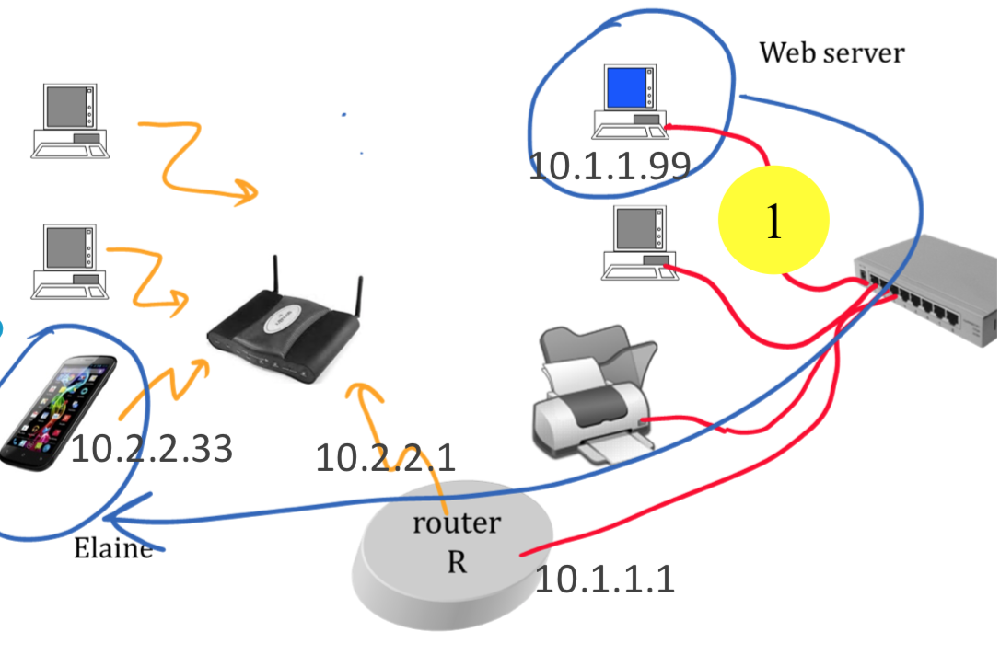

TCP/IP - Quiz
Quiz 1
Why packet switching ?
Reduces buffer required in routers
Reduces bit error rates
Increases capacity
time to send 1 MB at 10 kb/s ?
800 s
100 s
12.5 s
1 s
12.5 ms
1 ms
Propagation time around the Earth ?
200 s
100 s
200 ms
100 ms
2 ms
1 ms
The dotted decimal notation for 80c1:ffff
128.193.255.255
228.393.255.255
The hex notation 2001::bad:babe denotes a string of
32 bits
44 bits
48 bits
64 bits
128 bits
When a NAT has a packet to forward and an association exists in the NAT table...
The NAT looks for a longest prefix match
The NAT looks for an exact match
None
From WAN to LAN the NAT may modify
The source port
The destination port
None
Can Host A have this address ? Masks are all 255.255.255.0

Yes
No
The IPv4 Subnet Mask (26bits) at ETHZ is …
255.255.255.0255.255.255.1255.255.255.2255.255.255.192255.255.255.198ffff:ffff:ffff:ffff::ffff:ffff:ffff:ffff:c000::
The IPv6 Subnet Mask at ETHZ is …
255.255.255.0255.255.255.1255.255.255.2255.255.255.192255.255.255.198/48ffff:ffff:ffff:ffff::ffff:ffff:ffff:ffff:c000::
What is the subnet broadcast address for subnet 129.132.100.0/26 ?
129.132.100.0129.132.100.15129.132.100.63129.132.100.192129.132.100.255
Lisa’s PC, at home behind a NAT, sends an IP packet to a server in the US. The IP source address in the packet, seen at the US server, is ...
the IP address allocated to Lisa’s NAT by her ISP.
the home-network-IP-address of Lisa’s nexthop router.
There is no IP address since Lisa is not on the LAN of the US server.
home-network-IP-address of Lisa’s PC.
An application program sends data to a destination using either TCP or UDP. One of the packets is lost. Is it true that the application program must detect the loss and retransmit the packet ?
no in either case.
yes with TCP, no with UDP.
yes with UDP, no with TCP.
yes in both cases.
Say what is true for forwarding packets:
A router uses longest-prefix match, a bridge uses exact match.
A bridge uses longest-prefix match, a router uses exact match.
Routers and bridges use longest-prefix match.
Routers and bridges use exact match.
Lisa’s PC, at EPFL, receives an IP packet from a server in the US. The MAC source address in the packet (seen at Lisa’s PC) is the MAC address of ...
Lisa’s DNS server.
the server in the US.
There is no MAC address since the packet is coming from another LAN.
Lisa’s next hop router.
The stop and go protocol for retransmissions is efficient whenever
the transmission rate is large.
the bandwidth-delay product is large.
the transmission rate is small.
the bandwidth-delay product is small.
Which are valid IPv4 addresses ?
128.178.129.179228.278.229.279
1
None
2
Both
We multiply the bit rate of a line by a factor of 10. Say what is true.
- The propagation time is divided by 10
- The transmission time is divided by 10
Only 1.
None
Both
Only 2.
Which are valid IPv6 addresses ?
2001:baba::bebe2001::baba:bebe
Only 1.
Only 2.
None
Both
Inside the IP header we can read:
- The IP address of the source;
- The DNS name of the destination.
Only 2.
Both
Only 1.
None
Bart’s smartphone, at EPFL, receives an IP packet from a server in the US. The IP source address in the packet (seen at Bart’s smartphone) is the IP address of ...
the server in the US.
There is no IP address since Bart is not on the LAN of the US server.
Bart’s DNS server.
Bart’s next hop router.
A difference between TCP and UDP is...
TCP does not repair packet losses, UDP does
TCP repairs packet losses, UDP does not
TCP is only in end-systems, UDP is also in routers
TCP is also in routers, UDP is only in end-systems
Which of these hosts have the same network part ?
- Host A: IP address 10.1.1.1 mask 255.255.0.0
- Host B: IP address 10.1.2.1 mask 255.255.0.0
- Host C: IP address 10.2.2.1 mask 255.255.0.0
None, all hosts are indifferent subnets
All hosts are in the samesubnet
B and C are in the same subnet, A is not
A and C are in the same subnet, B is not
A and B are in the same subnet, C is not
I use my laptop to communicate over WiFi when I am at EPFL and when I am at ETHZ (I don’t use a VPN). The MAC address used as source address inthe frames sent by my laptop are...
the same whether my laptop is at EPFL or ETHZ
different when my laptop is at EPFL or ETHZ
it depends whether I use IPv4 orIPv6 (assuming I use only one ofthese two)
Say which one is a MAC Layer PDU ...
A bit
An Ethernet frame
An IP packet
A TCP segment
In an IP packet header there is ...
the DNS names of the source and of the destination of the IP packet
the DNS name of the destination only
the DNS name of the source only
None of the above
The uncompressed versionof the IPv6 address 2001:510:bad::babe is...
2001:0510:0bad:0000:babe
2001:0510:0bad:0000:0000:babe
2001:0510:0bad:0000:0000:0000:babe
2001:0510:0bad:0000:0000:0000:0000:babe
None of the above
Web server sends a packet to Elaine. We observe the packet at (1) (there is no NAT). What is the destination MAC address ?

M1
M2
M3
M4
There is no MAC address on Ethernet
Web server sends a packet to Elaine. We observe the packet at (1)(there is no NAT).What is the IP destination address ?

10.1.1.99
10.1.1.1
10.2.2.1
10.2.2.33
The function of the Address Resolution Protocol (ARP) is to...
Obtain the IPv4 address of the next hop when we know the IPv4 address of the final destination
Obtain the IPv4 address of a system when we know its MAC address
Obtain the MAC address of a system when we know its IPv4 address
Obtain the IPv4 address of a system when we know its DNS name
The address 128:178::151::1 is...
An IPv4 address
An IPv6 address
A MAC address
Both an IPv4 and IPv6 address
None of the above
The Internet uses packet switching rather than store and forward because ...
It decreases the error probability
It reduces buffers required in routers
It increases the end-to-end throughput
It makes the transport layer simpler
When a web browser connects to a web server, the DNS name of the web server
... is contained in the IP packet headers of the packets sent by the web browser to the web server
... is contained in the IP packet headers of the packets sent by the web server to the web browser
Both of the above
None of the above
Say what is true.
TCP adds reliability to the underlying network layer
UDP adds reliability to the underlying network layer
Both of the above
None of the above
When a web server sends a file to a web browser using TCP...
TCP is active in the end-systems(browser and web server) but not in routers along the path
TCP is active in the end-systems(browser and web server) and in all routers along the path
TCP is active in the end-systems(browser and web server) and in some routers along the path
TCP is active neither in the end-systems (browser and web server)nor in routers along the path
A webserver sends a file to Elaine. The IP destination address of the packet captured at the server ...
Is the IP address of Elaine’s device
Is the IP address of Elaine’s device or of the next router on the path
Is the IP address of the web server
Elaine receives a packet from a webserver. The MAC source address...
Is always the MAC address of the webserver
May in some cases be the MAC address of Elaine’s device
Is never the MAC address of Elaine’sdevice
Give the best answer
128.178.201.2 is an IPv4 address
2001:4860:4860::8888 is an IPv6 address
Both of the above are true
None of the above is true
traceroute (or tracert) is a program used to...
Find the IP addresses of all neighboring routers
Find the IP addresses of all routers inside a local area network
Find the IP addresses of all routers inside an enterprise network
Find the IP addresses of intermediate routers along the path to a destination
We double the length of acommunication cable. Give the best answer.
The transmission time is doubled
The propagation time is doubled
Both transmission and propagationtimes are doubled
Neither transmission nor propagationtime is affected
The throughput of the stop and go protocol ...
Increases when the propagation timeincreases
Decreases when the propagation timeincreases
Is not affected by the propagation time